If someone had told me that one connection request would become
my favourite person, my best friend, my wife and my home,
I don't think I would have imagined just how beautiful this journey would be.
This little page is a reminder of where we began, everything
we have built, and all the beautiful moments still waiting for us.
EVERYTHING STARTED SOMEWHERE
Our little story, our forever.
Some dates become memories. Some memories become a lifetime.
09 NOVEMBER 2025
01
One connection. A new beginning.
I came across your profile on Shaadi.com and sent you a
connection request. You accepted it. I found you on Instagram,
and that first conversation began something neither of us
could have fully imagined.
Little did I know, I had just found my person.
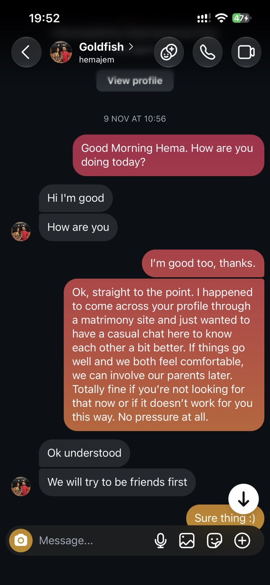
♡PHOTO 01
Our first conversation / first chat screenshot
12 NOVEMBER 2025
02
Our first meeting.
COCOA & CREME ROOFTOP CAFE · ADYAR
From messages on a screen to sitting across from each other.
We finally met in person. There was a spark, a feeling that
was difficult to explain, and a quiet certainty that we had
found someone special.
Somewhere between that meeting and those conversations,
we started seeing a future together.
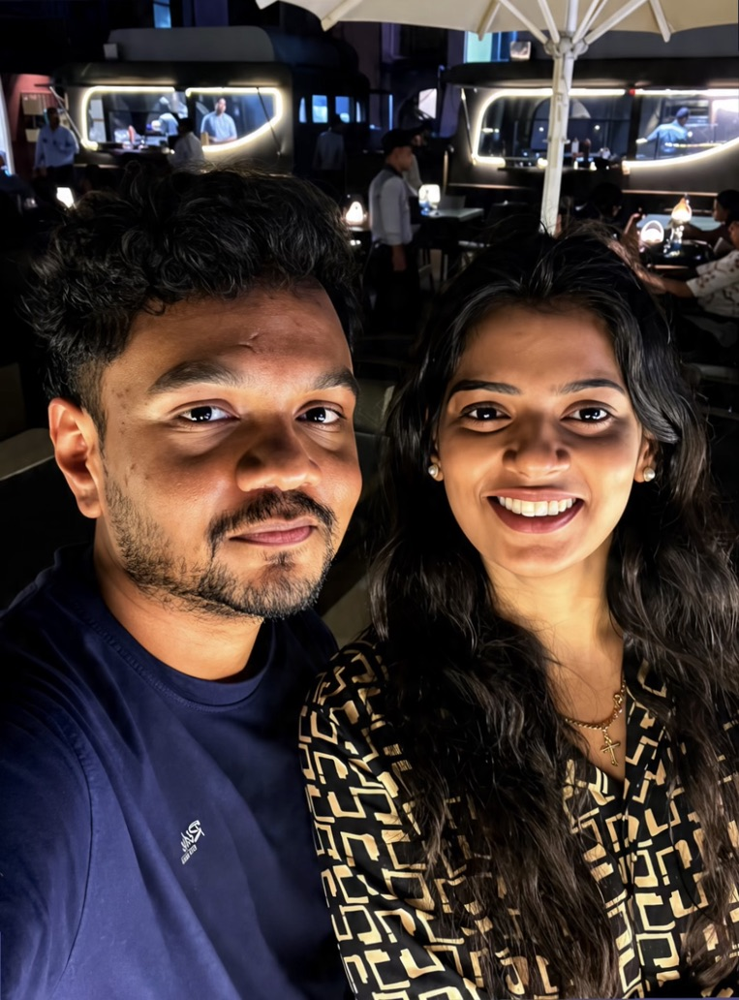
♡PHOTO 02
Our first meeting at Cocoa & Creme
06 DECEMBER 2025
03
Two families. One beautiful hope.
The day of our pen paarthal. Our families met, and our
relationship took another meaningful step.
I wanted you to feel more than just acceptance. I wanted you
to feel loved, welcomed and certain that we were building
something together.
We were both emotionally invested in making this happen.
We prayed together, hoped together and kept looking forward
to the day we could stand together as husband and wife.
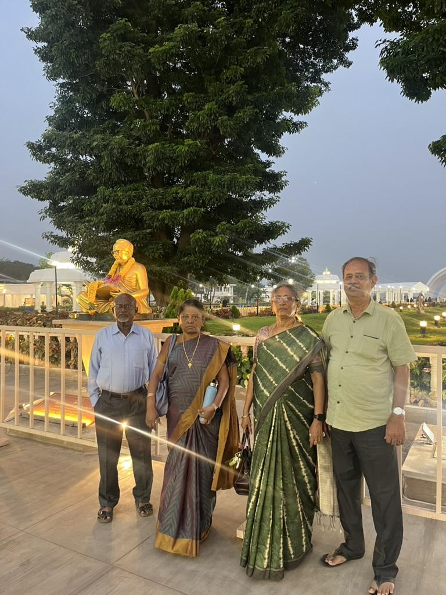
♡PHOTO 03
Pen paarthal / family meeting memories
THE DAYS BEFORE FOREVER
04
Planning a life together.
We spoke about everything that mattered: our home, finances,
jewellery, family arrangements, travel and all the little
responsibilities that come with building a life together.
They were not just plans. They were little pieces of the
future we were preparing to share.
We were not just dreaming of a wedding. We were preparing for a life.
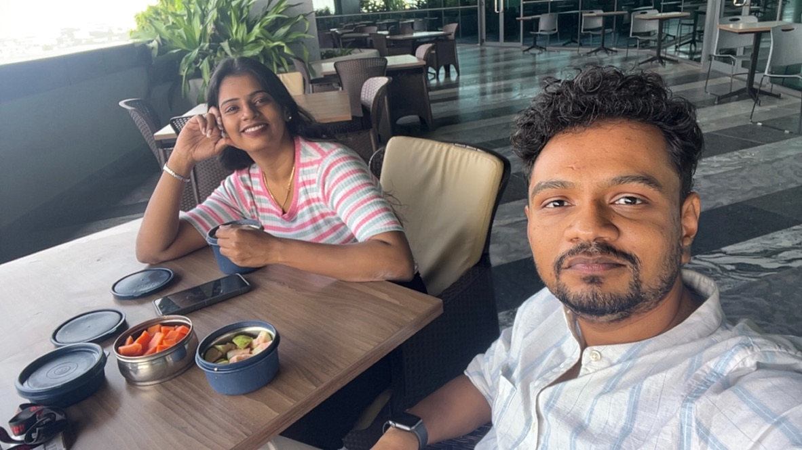
♡PHOTO 04
Our favourite moments before the wedding
12 FEBRUARY 2026
05
The day we got engaged.
A beautiful milestone in our journey. The promises, the
happiness, the excitement and the feeling that our forever
was getting closer.
One step closer to calling you my wife.
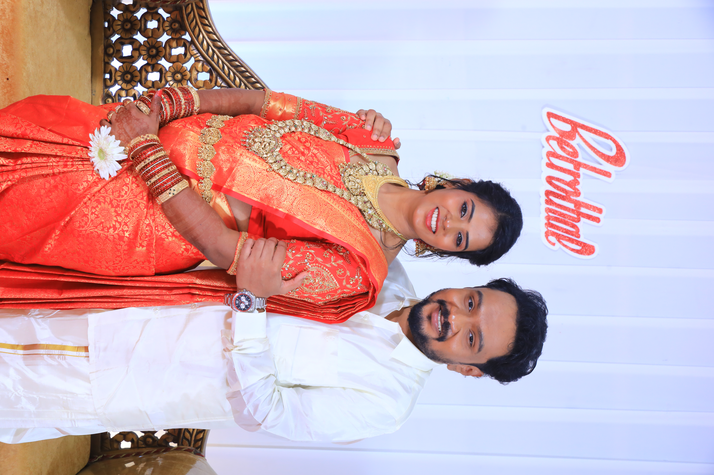
♡PHOTO 05
Our engagement photographs
13 FEBRUARY 2026
06
And then, we became us.
The day we became husband and wife. A day that turned all
those conversations, prayers, hopes and plans into our reality.
The beginning of a new chapter, with a new promise:
to choose each other, stand beside each other and build
our life together.
My favourite title will always be your husband.
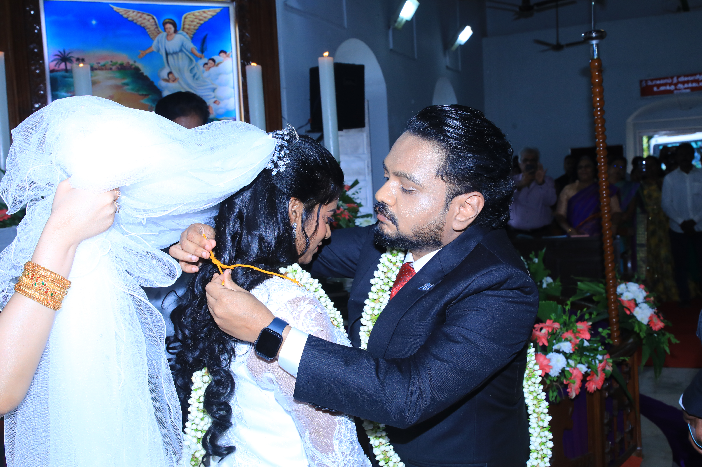
♡PHOTO 06
Our wedding day photograph
OUR FIRST HOME
07
A place of our own.
Finding our first home was its own little adventure.
We wanted a decent place where we could begin our life
together. We searched, struggled a little, and finally
found our place in Kotturpuram.
It may just be a home to the world, but to us it is where
our everyday memories are being made.
Home became less about a place and more about being together.
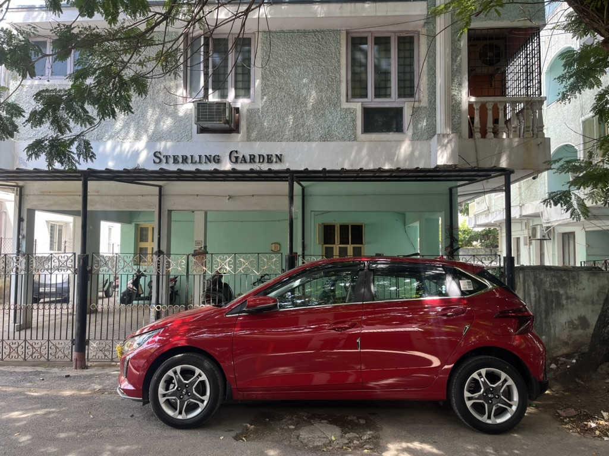
♡PHOTO 07
Our first home together
TODAY & EVERY DAY AFTER
08
Still choosing each other.
Married life is not a movie. We have our little arguments,
disagreements and different opinions. But somehow, we always
find our way back to each other.
Even when we fight, it never takes away what we have.
We make up, we learn, we grow, and our love keeps becoming
stronger with every passing day.
I don't need a perfect life. I just want this life with you.
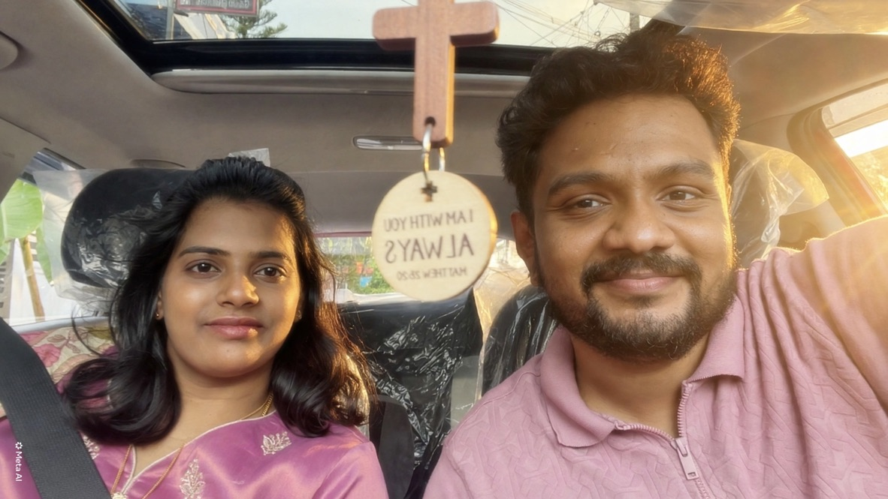
♡PHOTO 08
A recent favourite picture of us
A PRAYER THAT MEANS SO MUCH TO US
✦
Side by side, in every prayer.
Before we became husband and wife, we prayed for the day
we could stand together and pray as one.
"Lord, we thank You for giving us this day. Thank You for guiding
both of us, protecting us, and bringing our hearts together.
We pray that You lead us in Your will, strengthen our relationship,
and bless our journey ahead. Lord, please make our marriage happen
soon, and let us stand together as husband and wife by next year,
praying side by side. Be with us, unite us, and keep Your hand
over our future. Amen."
A prayer from our waiting days. A blessing for all our days ahead. ♡
LITTLE MOMENTS, FOREVER MEMORIES
Us, in a few favourite frames.
Because every picture has a story only we know.
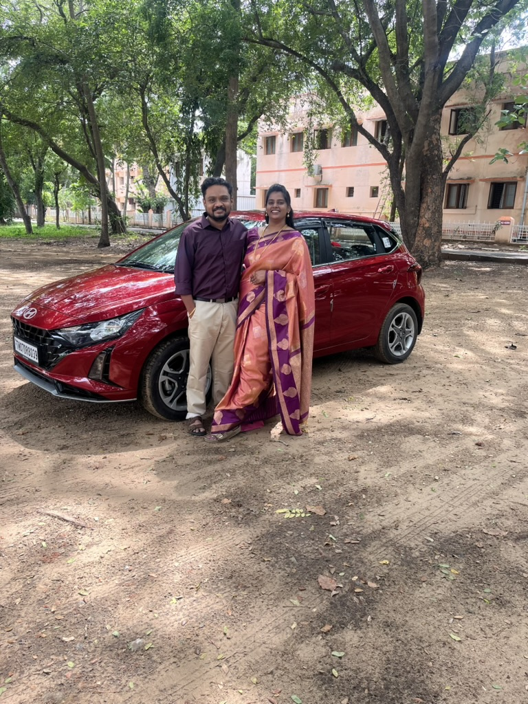
OUR KIND OF HAPPINESS
PHOTO 09Favourite couple photo
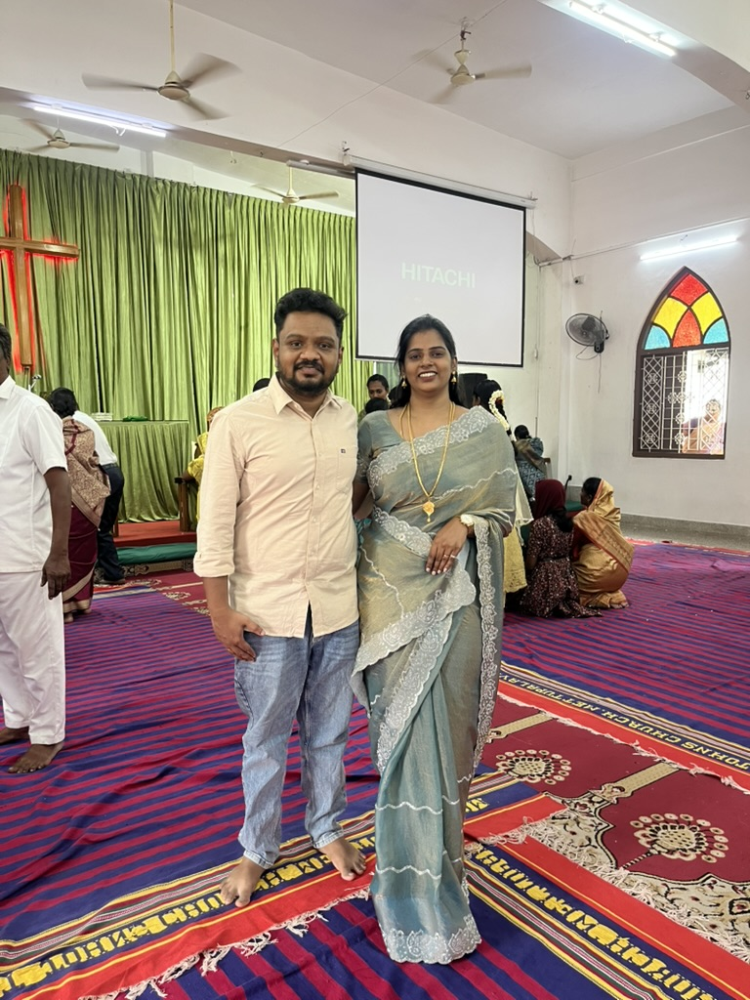
MY FAVOURITE PERSON
PHOTO 10A candid or selfie
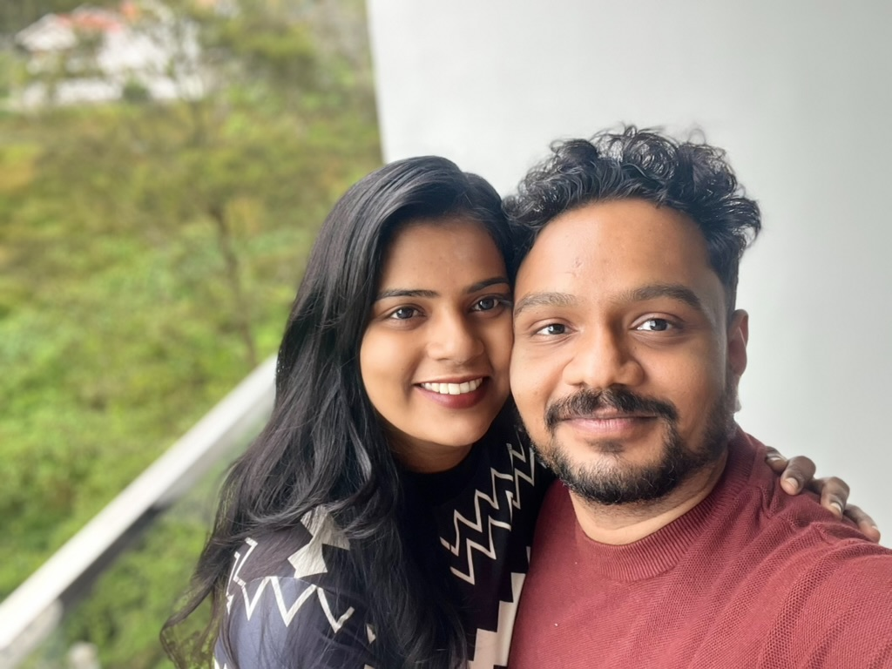
ALWAYS BETTER TOGETHER
PHOTO 11A trip or outing photo
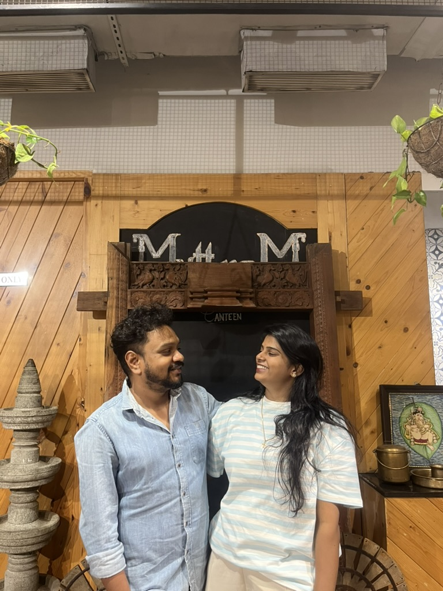
JUST US
PHOTO 12Your favourite recent photo
♡
A LITTLE REMINDER
Of all the places life could take me,
my favourite place will always be
by your side.
WITH LOVE, ALWAYS
A NOTE FROM MY HEART
For you, always.
A few words for the person who makes my world brighter.
There's something I want you to read.
A BIRTHDAY LETTER
My dearest Hema,
Happy Birthday, my love.
When I look back at our journey, I still find it beautiful how
a simple connection request became one of the most important
parts of my life. From our first conversation to our first meeting,
from our prayers and plans to the day we became husband and wife,
every step has brought us here.
Thank you for being part of my life. Thank you for sharing the
ordinary days, the happy moments, the difficult conversations,
the laughter and even the little arguments. I know we are still
learning about each other, and I want to keep learning, growing
and building this life with you.
I wish you peace, good health, happiness and everything your
heart hopes for. May God guide us, protect our home and bless
every chapter that is yet to come.
No matter how many birthdays come and go, I hope you always
feel loved, valued and cherished.
With all my love,
Your husband, always. ♡
NOW, MAKE A WISH
A little birthday magic.
Take a breath, make a wish, and tap the cake when you're ready.
Your birthday wish is waiting. ♡
May this year be as wonderful as you are, Hema.
Happy Birthday, my love! ♡